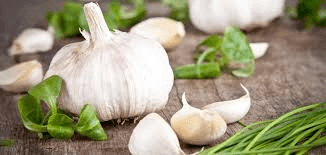

Alho e seus benefícios para a pressão arterial
As modificações de estilo de vida e a prescrição anti-hipertensiva são as principais recomendações no tratamento da hipertensão arterial sistêmica (HAS). No entanto, as preparações botânicas de alho mostram-se efetivas no tratamento desse importante fator de risco de doenças cardiovasculares (DCV), que são responsável por 40% das mortes relacionadas a essas doenças. Para identificar os sintomas da hipertensão, basta consultar o médico para confirmação do diagnóstico. Venha ser consultado pelo ganuh e acesse esse e-mail ou ligue para 079 9999-3327.